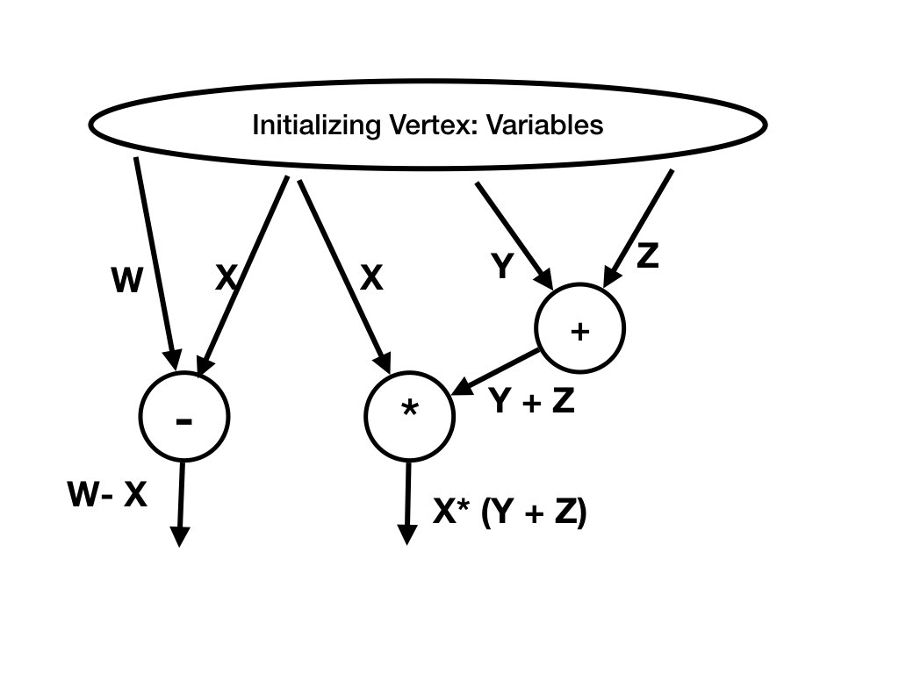
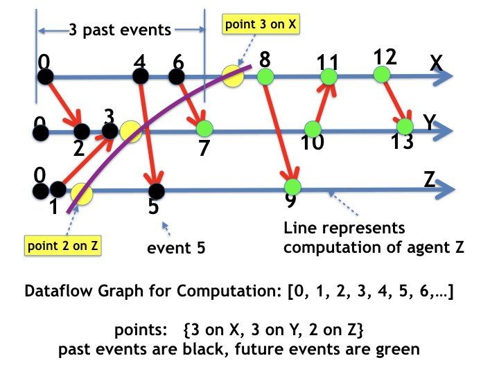
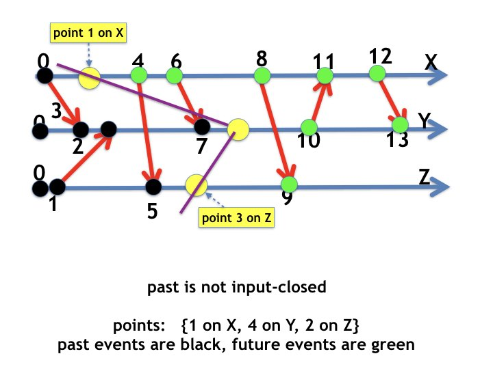

This page discusses a property of dataflow graphs.
A sequence of events of a dataflow graph is a computation if for all
edges \((e, e')\) of the graph, \(e'\) appears after \(e\) in the
sequence.
This is equivalent to: All topological sorts of dataflow graphs are
computations.
Directed Acyclic Graphs: Review
We begin with a review of a few basic properties of directed acyclic
graphs and dataflow.
The figure below is an example of a
directed acyclic graph
,
abbreviated to dag.
Fig.1: Example of a Directed Acyclic Graph
Topological Sort
A vertex \(v\) in a directed acyclic graph precedes a vertex \(w\)
exactly when there is a path from \(v\) to \(w\).
A topological sort
of a dag
is a sequence of vertices of the dag in which each vertex appears in
the sequence after all vertices that precede it.
Examples of topological sorts of the dag shown in figure 1 are \([0,
1, 2, 3, 4, 5, 6, 7]\) and \([0, 2, 1, 5, 3, 4, 6, 7]\).
Input-Closed Set of Vertices
A subset \(H\) of vertices of a dag is input
closed exactly when every edge to every vertex in \(H\) is from a
vertex in \(H\).
There is no path to a vertex in an input-closed vertex set from a
vertex outside it.
There may, however, be paths from vertices inside an input-closed
set to vertices outside it.
Examples of vertex sets that are input closed are \(\{0, 1, 2\}\),
and \(\{0, 1, 2, 5\}\).
An example of a vertex set that is not input closed is \(\{0, 1,
3\}\) because there is an edge to vertex \(3\) from vertex \(2\) which
is not in the subgraph.
Observation
For any input-closed subsets \(H, H'\) of vertices of a dag, where \(H
\subseteq H'\) the sequence of vertices consisting of a topological
sort of \(H\) followed by a topological sort of \(H' - H\) followed by
a topological sort of the complement of \(H'\) is a topological sort
of the dag.
In figure 1, \(H = \{0, 1, 2, 5\}\)
and \(H' = \{0, 1, 2, 3, 4, 5\}\)
are input closed, and the sequence
\([0, 2, 1, 5]\) followed by \([3, 4]\) followed by
\([6, 7]\) is a topological sort of the dag.
Dataflow: Review
Next we review properties of
dataflow
that help in understanding distributed computing algorithms.
A vertex of a dataflow graph is an operation on variables of a
computation.
A directed edge connects the output of an operation to the input
of another operation.
An edge is labeled with the data that is transferred between
operations.
We restrict attention to acyclic dataflow graphs.
A computation of a dataflow graph is an execution (possibly a
parallel execution) of operations of the graph where:
an operation is executed after all
operations that precede it.
Example of Dataflow
The figure 2 is an example of a dataflow graph.
The vertices are operations, \(+. *, -\), and the edges show the
formula of the data on the edge.
The initial vertex generates the variables of the dataflow.

Fig.2: Example of Dataflow
Properties of Dataflow
The following observations follow directly from properties of directed
acyclic graphs.
For all input-closed sets \(H, H'\) of operations where \(H
\subseteq H'\) there exists a computation that executes all operations
in \(H\), then executes operations in \(H' - H\), and then executes
operations that are not in \(H'\).
Example: Topological Sorts of Dataflow Graphs are Computations
Examples of topological sorts of the operations in figure 2 are \([-,
+, *]\), \([+, -, *]\), and \([+, *, -]\).
All these sequences of operations have the property that an operation
is executed only after all operations that precede it.
An example of a sequence which is not a topological sort is \([*, +,
-]\).
Example: Topological Sorts of Dataflow Graphs are Computations
Figure 3 shows different computations with the same dataflow
graph.
The two diagrams of the figure show two topological sorts of the same
dataflow graph.
Events of the same graph are laid
out from left to right in the order in which they occur in the
computations.
Fig.3: Example - Computations with the same Dataflow
Example: Computations between Sets of
Events
There exists a computation that first executes events in \(H = \{0,
2\}\) and then the events in \(H' - H\) where \(H' = \{0, 1, 2,
5\}\) and then the remaining events.
The State at an Input Closed Set of Events
The state \(S\) at an input-closed set \(H\) of events of the
dataflow of a computation is the state after executing
all events in \(H\) and before executing events any event that is not
in \(H\).
\(S\) is obtained from the graph as follows.
The state of an agent \(u\) in \(S\) is the label of the agent \(u\)
edge from a vertex inside \(H\) to a vertex outside \(H\).
The state of a channel \((u, v)\) in \(S\) is the sequence of labels
of \((u, v)\) edges from vertices inside \(H\) to vertices outside
\(H\).
From observation 2,
for input-closed event sets \(H, H'\) where \(H \subset H'\):
there is a computation from the state at \(H\) to the state at \(H'\).
Example: State at an Input-Closed Set of Events
Let's look state \(S_{3}\) of the
input-closed event set \(H = \{0, 1, 2, 3\}\) in figure 1.
A vertical line between events 3 and 4 is a boundary between vertices
in \(H\) and vertices outside it.
\(S_{3}\) is determined by the labels of edges that cross the
boundary.
The boundary line intersects the agent edge for
\(u\) at an edge with label "e" signifying empty; so, \(u\) holds no tokens in
\(S_{3}\).
The line intersects the edges for channel \((v, u)\) at a single edge
and that edge has label "red token" and so the state of the \((v, u)\)
in \(S_{3}\) is a sequence of messages consisting of a single message
-- the red token.
The boundary line does not intersect an edge for the channel \((u, v)\), and so
the state of this channel is the empty sequence of messages.
The line intersects message edges for messages on channel \((v, v)\)
at a single edge; this edge is labeled with the wakeup message.
So, the state of channel \((v, v)\) is a sequence consisting of a single
message -- the wakeup message.
The states of other agents and channels are determined similarly.
The state \(S_{i}\) that occurs in a computation after events \(0,
\ldots, i\) are obtained similarly and are shown in figure 3.
The lower part of figure 3 shows the event graph and
the upper part shows the sequence of states in the
computation.
The dotted vertical lines show boundaries of event sets \(0,
\ldots, i\), for all \(i\).
Fig.3: Example: States at Input-Closed Event Sets
Example: State at an Input-Closed Set of Events
Let's look at the state at the event set \(\{0, 1, 2, 5\}\).
The state of \(u\) is the label of the edge from event 5 to 6 -- holds
red token.
The state of \(v\) is the label of the edge from event 2 to 3 -- holds
no token.
The boundary line cuts the message edge from 1 to 3.
This edge is labeled with blue token; so the state of channel \((u,
v)\) is blue token.
The boundary does not intersect with other edges, and so that states
of the remaining channels are empty sequences.
Event Sets specified by Points in Agent
Computations
A point in an agent's computation is an integer \(i\).
The past at point \(i\) on an agent's computation is the set of the
first \(i\) events at the agent, and the future is the set of
events at the agent that are not in the past.
A point \(i\) in an agent's computation is shown as a location on the
edge from the \(i\)-th event to the \(i+1\)-th event.
All agent edges to past events are past events.
And, all agent edges to future events are from future events.
Example: Points, Past, and Future
The figure below shows a dataflow graph for a computation with events
\([0, 1, 2, \ldots]\).
Points on the agents' computations are shown as yellow circles.
For example, the point on agent \(X\) is 3 because it is the edge from
the 3rd event (event number 6) to the 4th event (event number 8) at
the agent.

Fig.4: Example: Past and Future
The set of past events are colored black and the set of future events
are colored green.
The purple line connecting the points separates the past from the future.
All horizontal edges to black vertices are from black vertices.
And, all horizontal edges to green vertices are from green vertices.
Example: Points, Past, and Future
The next figure shows a set of points on agent computations in which
the past is not input closed.

Fig.5: Example: Past is not Input Closed
The past is not input closed because there is a message sent in the future
(a green vertex) that is received in the past.
Theorem about Past and Future
The following result is self-evident from the definition of
input-closed sets.
Given a point on each agent's computations, the set of past events at
these points is input-closed if any only if one of the following conditions holds.
Each message received in a past event is sent in a past event.
Each message sent in a future event is received in a future event.
For all channels \(C\), \(\; C_{s} \geq C_{r}\), where \(C_{s}, C_{r}\)
are the numbers of messages
sent and received (respectively) on the channel in the past
events.
In graphical terms, all edges that cross the boundary separating
past and future events in the dataflow graph are directed
from the past to the future.
The next four webpages describe important -- though straightforward --
applications of the theorem.